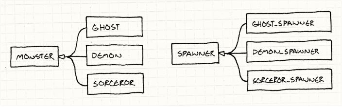
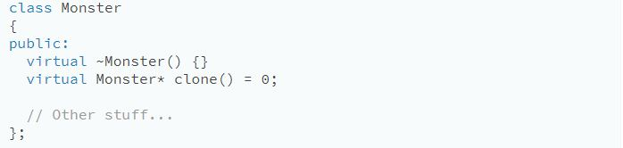
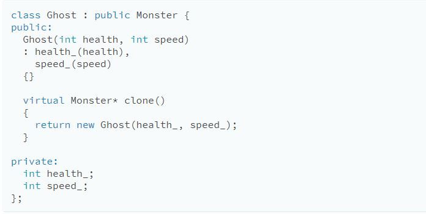
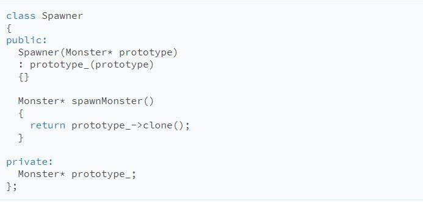

The Prototype Design Pattern
In a video game that has hordes of monsters that randomly appear around the map, there can be creatures and fiends swarming around the hero. These monsters enter the arena by way of “spawners”, and there is a different spawner for each kind of enemy.
For the sake of this example, let’s say we have different classes for each kind of monster in the game: Ghost, Demon, Sorcerer, etc., like:
The task to implement such an example becomes tedious, and the mere thought is as arduous as fighting these monsters in game. Rather than brute force your way into making each individual class, we can take advantage of the Prototype Design Pattern.
The Key Idea
Design Patterns are tried and true methods of making our lives easier as Software Engineers. Since there is a pattern among making monsters (Ghosts, Demons, and Sorcerers are all Monsters )and making spawners for each monster (Ghost Spawner, Demon Spawner, and Sorcerer Spawner are all Spawners, then the Prototype Pattern demands that we make something that repeats this pattern for us.
Implementation
To implement this, we give our base class, Monster, an abstract clone() method:
Every class that derives from the base class would then proceed to create an implementation returns a new object identical in class and state to itself.
Once all our monsters support that, we no longer need a spawner class for each monster class. Instead, we define a single one:
